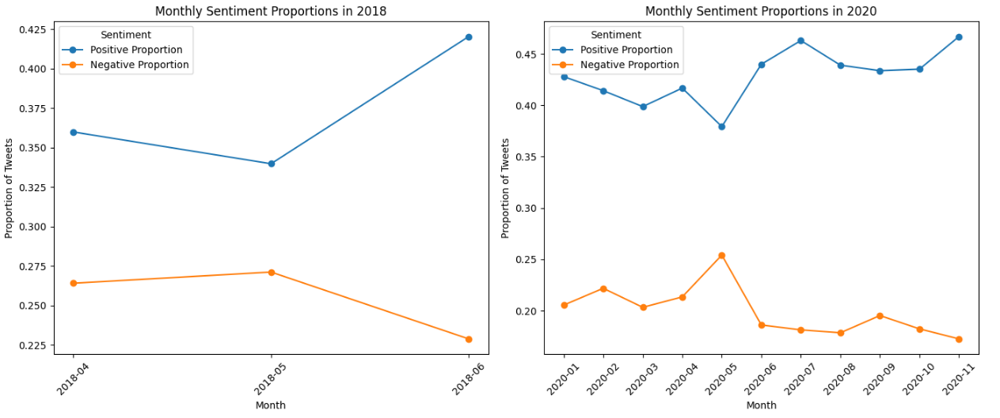
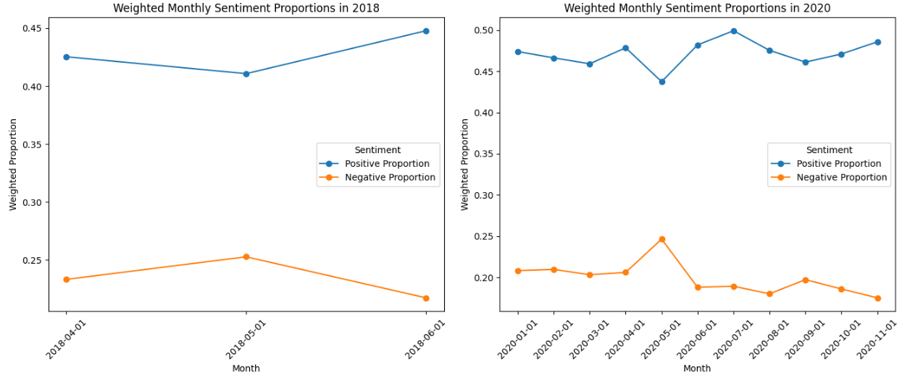

VADER's compound score classifies each tweet as positive, neutral, or negative. Plotted month by month across both years, the unweighted view shows steady positive lean punctuated by predictable dips around real-world events. The engagement-weighted view, which gives extra weight to viral tweets, sharpens the picture: Tesla's most-amplified content skews even more positive than the average tweet.

Fig. 5: Unweighted monthly sentiment proportions. 2018 (left): positive rises from 36% in April to 42% by June across the Model 3 production crisis. 2020 (right): positive holds between 38% and 47%, with a clear May spike in negative sentiment (~25%) corresponding to the pandemic factory shutdown.

Fig. 6: Engagement-weighted monthly sentiment. Weighted positive sits 4-7 percentage points higher than the unweighted baseline in most months, meaning Tesla's viral content tends to be more positive than its average tweet. The May 2020 negative spike persists, indicating the pandemic-shutdown controversy generated unusually high engagement.